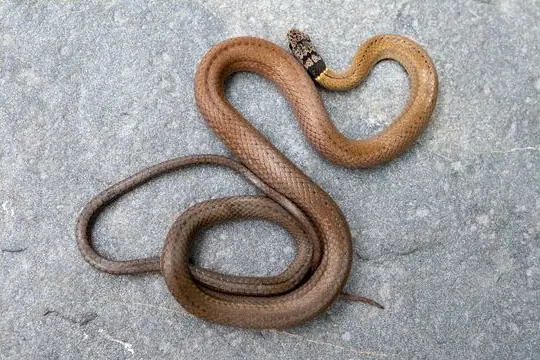
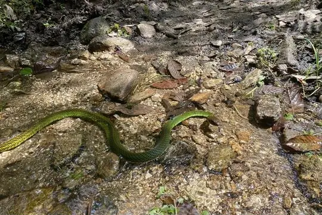
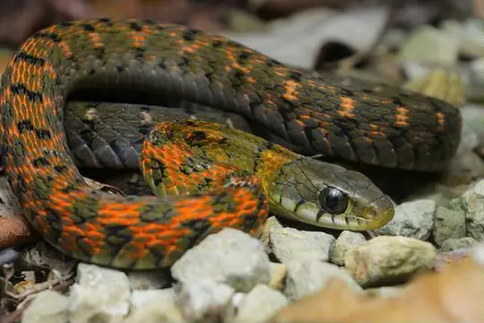
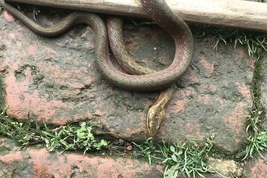
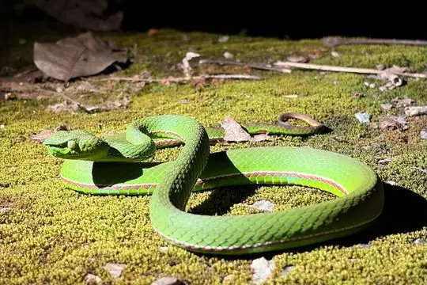
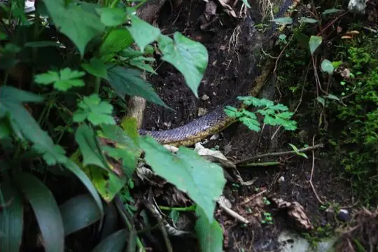

Snakes of Tibet
A state or province of China
17 snake species are recorded in Tibet, a state or province of China, in SnakeList: 9 venomous and 8 non-venomous, from 3 families.
- 17species
- 9venomous
- 8non-venomous
- 3families
- 3found only here
SnakeList records where snakes live by country and by state or province, not by exact spot, so a species listed here may live in only part of Tibet. All snakes of China.
Most widely recorded
The species here that have research-grade iNaturalist records in the most places across their whole range - not just in Tibet. That shows how often people have photographed them, not how many live here.
 King CobraOphiophagus hannah
King CobraOphiophagus hannah
Common Many-tooth SnakeSibynophis collaris
Green Rat Snake (nigromarginata)Ptyas nigromarginata
Orange-collared KeelbackRhabdophis himalayanus
Himalayan KeelbackHerpetoreas platyceps White-banded Wolf SnakeLycodon septentrionalis
White-banded Wolf SnakeLycodon septentrionalis
Green Bamboo Leaf Pit ViperTrimeresurus medoensis
Zayuan mountain pitviperOvophis zayuensis
Snake families
Venomous and non-venomous
Venomous: 9Non-venomous: 8
9 are listed by SnakeList as dangerous to people: Green Bamboo Leaf Pit Viper Trimeresurus medoensis, Habu Pit Viper Protobothrops himalayanus, Kaulback's Lance-headed Pitviper Protobothrops kaulbacki, King Cobra Ophiophagus hannah, Lancang Plateau Viper Gloydius huangi, Northeastern Hill Krait Bungarus bungaroides, Orange-collared Keelback Rhabdophis himalayanus, Szechwan Pit Viper Protobothrops xiangchengensis, Zayuan mountain pitviper Ovophis zayuensis.
Found only here
Recorded in no other state or province or country in SnakeList’s data. That may mean it lives only here, but it can also mean it has not been recorded elsewhere yet.
- Lancang Plateau Viper Gloydius huangi
- Mêdog Himalayas Keelback Herpetoreas tpser
- Zayu Wolf Snake Lycodon zayuensis
Habitats (rough estimate)
How many of its living snakes have each kind of habitat in SnakeList’s estimate. That estimate comes from every country, state and province where each snake is recorded - not from a survey of Tibet, and not checked species by species.
Who described them
The scientists who first described its most widely recorded snakes, and when.
- King Cobra Ophiophagus hannah - described by Cantor in 1836 (under another genus name)
- Common Many-tooth Snake Sibynophis collaris -
- Green Rat Snake (nigromarginata) Ptyas nigromarginata -
- Orange-collared Keelback Rhabdophis himalayanus -
- Himalayan Keelback Herpetoreas platyceps -
- White-banded Wolf Snake Lycodon septentrionalis -
- Green Bamboo Leaf Pit Viper Trimeresurus medoensis -
- Zayuan mountain pitviper Ovophis zayuensis -
Names and dates come from SnakeList’s reviewed species accounts; the others are looked up on Wikidata (CC0) when this page opens.
Neighbouring states and provinces
Places in SnakeList that share a border with Tibet.
- Qinghai 3 species
- Sichuan 47 species
- Xinjiang 6 species
- Yunnan 78 species
- Arunachal Pradesh (India) 63 species
- Bagmati Zone (Nepal) 12 species
- Bhojpur (Nepal) 1 species
- Dhaulagiri Zone (Nepal) 1 species
- Gandaki Zone (Nepal) 11 species
- Gasa (Bhutan) 1 species
- Himachal Pradesh (India) 16 species
- Jammu and Kashmir (India) 16 species
- Janakpur Zone (Nepal) 3 species
- Kachin State (Myanmar) 12 species
- Karnali Zone (Nepal) 1 species
- Lhuntse (Bhutan) 3 species
- Mahakali Zone (Nepal) 3 species
- Mechi Zone (Nepal) 9 species
- Sagarmatha Zone (Nepal) 2 species
- Seti Zone (Nepal) 5 species
- Sikkim (India) 36 species
- Thimphu (Bhutan) 1 species
- Trashiyangtse (Bhutan) 2 species
All 17 species
- Common Many-tooth Snake Sibynophis collaris
- Gammie's Wolf Snake Lycodon gammiei
- Green Bamboo Leaf Pit Viper Trimeresurus medoensis venomous
- Green Rat Snake (nigromarginata) Ptyas nigromarginata
- Habu Pit Viper Protobothrops himalayanus venomous
- Himalayan Keelback Herpetoreas platyceps
- Kaulback's Lance-headed Pitviper Protobothrops kaulbacki venomous
- King Cobra Ophiophagus hannah venomous
- Lancang Plateau Viper Gloydius huangi venomous
- Mountain Worm-eating Snake Trachischium monticola
- Mêdog Himalayas Keelback Herpetoreas tpser
- Northeastern Hill Krait Bungarus bungaroides venomous
- Orange-collared Keelback Rhabdophis himalayanus venomous
- Szechwan Pit Viper Protobothrops xiangchengensis venomous
- White-banded Wolf Snake Lycodon septentrionalis
- Zayu Wolf Snake Lycodon zayuensis
- Zayuan mountain pitviper Ovophis zayuensis venomous
No snake here matches that.